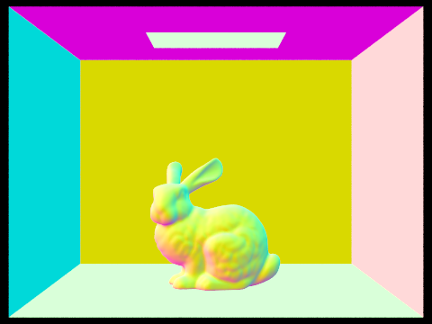

Use this section to write an overview of the assignment. All of the text in your write-up should be in your own words. If you need to add additional HTML features to this document, you can search the http://www.w3schools.com/ website for instructions. To edit the HTML, you can just copy and paste existing chunks and fill in the text and image file names appropriately.
If you are well-versed in web development, feel free to ditch this template and make a better looking page. Just make sure that you include all the components as we've laid them out here.
Part 1: Ray Generation and Intersection
Describe what you did in Part 1. etc...
|
|

|

|
Here is an example of how to include a simple formula:
a^2 + b^2 = c^2
or, alternatively, you can include an SVG image of a LaTex formula.
This time it's your job to copy-paste in the rest of the sections :)
[PathTracer] Input scene file: ../dae/sky/CBspheres_lambertian.dae [PathTracer] Collecting primitives... Done! (0.0000 sec) [PathTracer] Building BVH from 14 primitives... Done! (0.0000 sec) [PathTracer] Rendering... 100%! (5.7204s) [PathTracer] BVH traced 10861138 rays. [PathTracer] Averaged 8.302319 intersection tests per ray. [PathTracer] Input scene file: ../dae/sky/CBgems.dae [PathTracer] Collecting primitives... Done! (0.0000 sec) [PathTracer] Building BVH from 252 primitives... Done! (0.0001 sec) [PathTracer] Rendering... 100%! (76.3131s) [PathTracer] BVH traced 11021158 rays. [PathTracer] Averaged 115.702678 intersection tests per ray.Part 2: Bounding Volume Hierarchy
Describe what you did in Part 1. etc...
|

|
Here is an example of how to include a simple formula:
a^2 + b^2 = c^2
or, alternatively, you can include an SVG image of a LaTex formula.
This time it's your job to copy-paste in the rest of the sections :)
A Few Notes On Webpages
Here are a few problems students have encountered in the past. You will probably encounter these problems at some point, so don't wait until right before the deadline to check that everything is working. Test your website on the instructional machines early!
- Your main report page should be called index.html.
- Be sure to include and turn in all of the other files (such as images) that are linked in your report!
- Use only relative paths to files, such as
"./images/image.jpg"
Do NOT use absolute paths, such as"/Users/student/Desktop/image.jpg"
- Pay close attention to your filename extensions. Remember that on UNIX systems (such as the instructional machines), capitalization matters.
.png != .jpeg != .jpg != .JPG
- Be sure to adjust the permissions on your files so that they are world readable. For more information on this please see this tutorial: http://www.grymoire.com/Unix/Permissions.html
- And again, test your website on the instructional machines early!